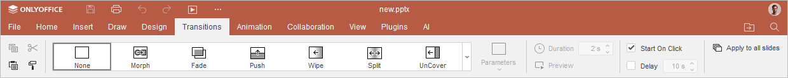

Primena prelaza
Prelaz je efekat koji se pojavljuje kada jedan slajd prelazi na sledeći tokom prezentacije. U Uređivaču prezentacija možete primeniti isti prelaz na sve slajdove ili različite prelaze na svaki pojedinačni slajd i prilagoditi parametre prelaza.
Da biste primenili prelaz na jedan slajd ili više izabranih slajdova:
- Prebacite se na karticu Prelazi na gornjoj traci sa alatkama.

- Izaberite slajd (ili više slajdova u listi slajdova) na koji želite da primenite prelaz.
-
Izaberite jedan od dostupnih efekata prelaza na kartici Prelazi: Nijedan, Morf, Bledenje, Guranje, Brisanje, Podela, Otkrivanje, Pokrivanje, Sat, Zumiranje i Nasumično.
Možete dodeliti ime objektu na slajdu koji se koristi u prelazu Morf. Da biste to uradili, kliknite desnim tasterom miša na objekat, izaberite Napredna podešavanja oblika > Opšte > Naziv oblika. Naziv objekta se koristi za uparivanje dva objekta i prisiljavanje prvog da se transformiše u drugi. Naziv mora odgovarati šablonu
!!Namei ostati isti za oba morfirana objekta. - Kliknite na dugme Parametri da biste izabrali jednu od dostupnih opcija efekta koje tačno definišu kako se efekat prikazuje. Na primer, opcije dostupne za efekat Zumiranje su Zumiranje unutra, Zumiranje spolja i Zumiranje i rotacija.
- Odredite koliko dugo želite da prelaz traje. U polju Trajanje unesite ili izaberite potrebnu vremensku vrednost, izraženu u sekundama.
- Pritisnite dugme Pregled da biste videli slajd sa primenjenim prelazom u oblasti za uređivanje slajda.
- Odredite koliko dugo želite da se slajd prikazuje pre nego što pređe na sledeći:
- Pokreni na klik – označite ovo polje ako ne želite da ograničite vreme prikaza izabranog slajda. Slajd će preći na sledeći tek kada kliknete na njega mišem.
- Kašnjenje – koristite ovu opciju ako želite da se izabrani slajd prikazuje tokom određenog vremenskog perioda pre nego što pređe na sledeći. Označite ovo polje i unesite ili izaberite potrebnu vremensku vrednost, izraženu u sekundama.
Napomena: ako označite samo polje Kašnjenje, slajdovi će se automatski menjati u određenom vremenskom intervalu. Ako označite i polja Pokreni na klik i Kašnjenje i postavite vrednost kašnjenja, slajdovi će se takođe automatski menjati, ali ćete moći i da klikom na slajd pređete na sledeći.
Da biste primenili prelaz na sve slajdove u prezentaciji, kliknite na dugme Primeni na sve slajdove na kartici Prelazi.
Da biste obrisali prelaz, izaberite odgovarajući slajd i izaberite Nijedan među opcijama efekata prelaza na kartici Prelazi.
Da biste obrisali sve prelaze, izaberite bilo koji slajd, izaberite Nijedan među opcijama efekata prelaza i pritisnite dugme Primeni na sve slajdove na kartici Prelazi.